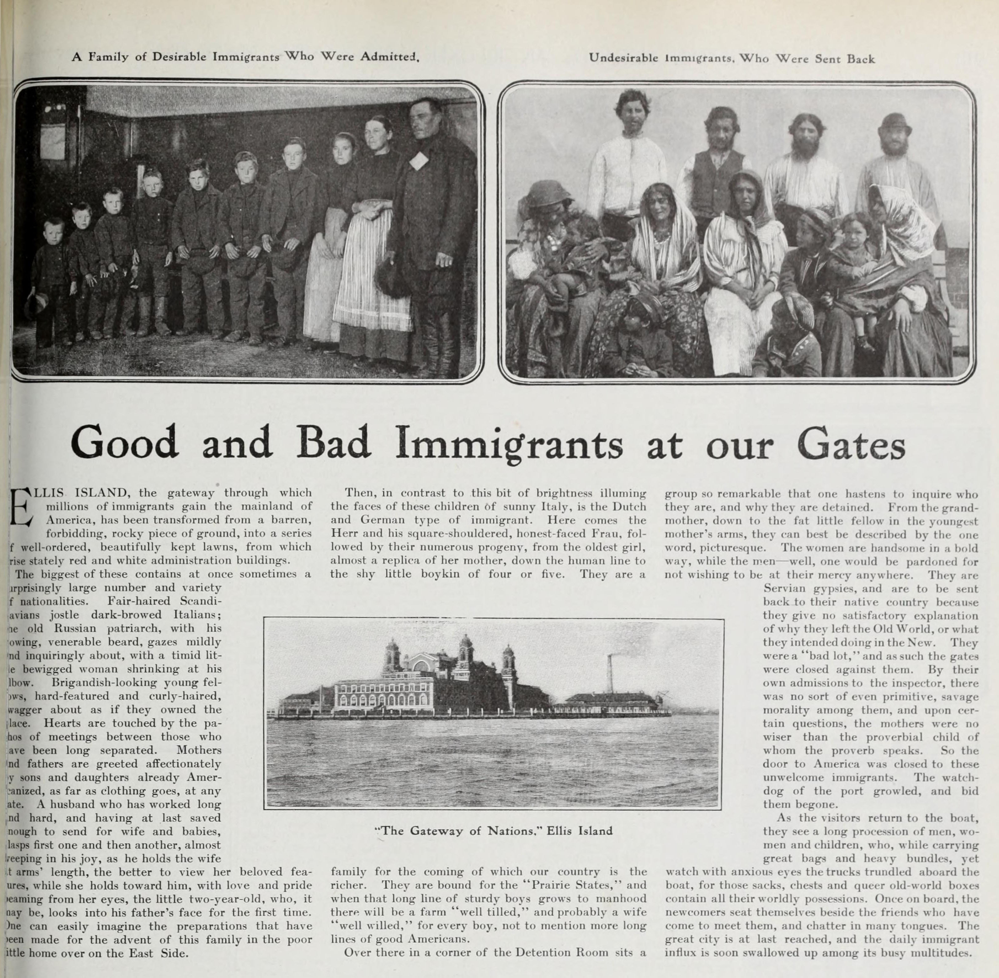
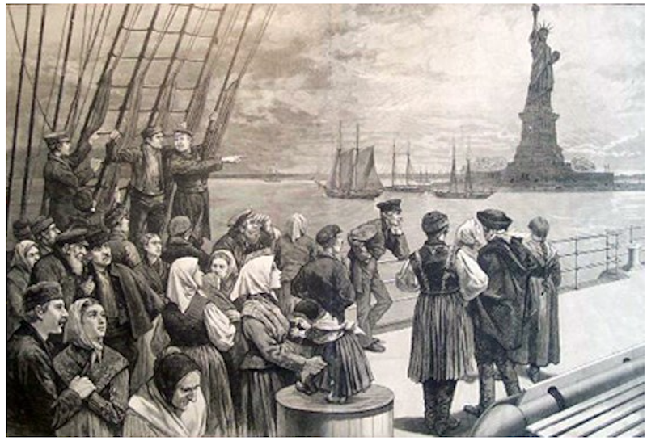

Introduction and summary
“To have a second language is to have a second soul”, by Charlemagne. When we learn a new language, this learning process it is not only write, speak, listen and read a new language. learn a new language is to learn a new culture, life and history. And the process to learn a second language is different for someone who wants to learn a second language, from someone who needs to learn a second language. In the immigrant community learn a second language is a main point for the adaptation in a new society.
Learn a second language for almost all immigrants is something they need it. Jobs, documentations, supermarkets, traffics signs, and the list never stop, all those things are necessary to learn and for most people are not a barrier, but for an immigrant who not only need to care about work, children, and probably a second job and many other important things that make difficult to someone gets time and money to learn a second language, but for many stories and my own story I know this is possible. But this is different from someone who is child, these obstacles are different and the percentage of children who learn a second language is greater than that of adults. In this article I am going in details how different is to learn a language in language at a young age compared to adulthood in the immigrant community and the process to adapt in this new society and how literacy is important in all this process.
Adaptation And Different To Learn A New Language:
The process of learning a new language is a huge barrier for most migrants who come to the United States of America. In the vast majority of cases, people who decide to immigrate to the United States do so in search of a better life. Most people who arrive in the country have many needs and face a long process of adapting to a new society, where migrants often experience separation or discrimination. The process of adapting to a new society can be a huge undertaking for each person who needs to learn a new language, how the economy works, a new currency, food, and above all, the need to work and study.
 Newspaper from 1905 — “Immigrants’ Photographic Legacy.” 15 June 2025, scalar.usc.edu/works/let-me-get-there/immigrants-photographic-legacyThe process of learning a language differs depending on the stage of life at which it is needed. In my personal experience, learning a new language as an adult is very complicated, and for many in my family and myself, it can be a major challenge in a person's life. But what does it mean to adapt to a new society? “Society adaptation in immigration is the complex, two-way process where both immigrants and the host society adjust to cultural differences, involving changes in economic, cultural, social, and psychological ways, often moving from initial culture shock towards integration, where immigrants maintain heritage while engaging with the new culture, rather than just forced assimilation” (by Emely Lemanczyk) This definition perfectly describes one of the main problems an immigrant faces in the process of learning a new language: maintaining their own culture, customs, and religion, and how this new culture changes the environment where they come to live. In adulthood, there is a huge process of assimilation because the person has to make a double effort and a double expenditure of money and time, which becomes crucial for assimilation in the United States. The process of learning a language is often nearly impossible for many migrants who are forced to work long hours to support their families. For many parents, their education is a secondary or tertiary priority, where the most important thing is their children's prosperity and education, because for those who immigrate, the American Dream lies in a better future for their children.
Undoubtedly, the process of learning a language for those who arrive in the United States as children is not easy. For many, this process involves forgetting their roots and losing their identities, not adapting to a new society, but assimilating as a new person who forgets who they were and leaves their roots behind. This does not happen in every case, but it is common among many young immigrants. For many of these young people, adaptation is a complex and complicated process that often involves navigating two worlds: one with their parents and family, and another in their recreational and educational settings.
But this doesn't mean everything is a barrier. This nation offers many opportunities, and the countless stories of young people who adapted, maintaining their culture and language while incorporating their new one, allow them to achieve individual and personal success in their lives. In the following example, Alicia Nyein speaks about her experience as a young immigrant: "Coming into a completely new culture, language, and way of living in California at such a young age was very stressful for me. For the first four or five years, I didn't talk or participate much in class; I felt like an outsider, which was terrifying to me. My inability to speak English fluently made it hard to communicate, and other kids made fun of my English." But after a period of adaptation, Alicia Nyein also explains: "Having lived in developing and developed countries opened my eyes to how fortunate I was, and this appreciation pushed me to work hard, especially in school. Living in California gave me access to a high-quality education, and I utilized it to the best of my ability." For most young people, adapting to a new society is complicated, but it also brings great opportunities for a better future.
Importance Of Literacy In The immigration Process:
To speak of literature and the adaptation of migrants, and how literature helps in their assimilation, is also to speak of the historical importance that literature has had in this nation and in the migrants who have arrived throughout the history of the United States of America. From a nation whose history has been written with the blood and labor of millions of migrants, from a promise where freedom, life, and the pursuit of happiness have been the driving force of prosperity, to speak of an American history without migrants is to speak of a literature without words. I was born and raised in another country, immigrated, and became an American citizen. For me, historical literature and the influence of so many immigrants are present from the very roots of the American nation. As an immigrant, I believe that our contribution through literature is a means by which we learn about all the changes that have taken place in this nation. From the first thirteen colonies that started this nation, through the gold rush migration, the migration from the Great Irish Famine, the migration from Germany and Italy in the early and mid-20th century, the United States has seen a huge genesis of populations that have contributed greatly to the nation and especially to the literature and culture of the United States.
 An Overview of the History of Immigration to America (1800–2010) | by Peter Paccone | Medium, ppaccone.medium.comLiterature has been and is the most important means for language adaptation in the migrant community. In the process of learning and adapting to a new world, for most people arriving in this nation, literature (writing, reading) is currently a challenge. However, new technologies and their use allow many people to learn the language in a completely different way. YouTube, TikTok, and articles found online are sources of entertainment and, at the same time, new ways of learning for those who do not have enough time or the opportunity to receive formal education. Social media platforms like YouTube offer completely free English courses that anyone can access at any time. This is an example of how visual literacy is a new and practical approach to learning and adaptation that thousands of people use. Furthermore, the adaptation process is much easier these days than it was years ago; there are now apps specifically designed for language learning. In an interview with Maria Artiagua, an immigrant from Mexico, she told me that for her, with three children, maintaining a household, and working 10 hours a day, learning English is complicated. However, it has been easier using her phone, mainly with English study apps, as they allow her to study in short bursts during breaks or at home without having to attend classes for extended periods and spend money that she needs to use for other things. In her words, she knows that formal education is better, but in many cases, it's not very accessible.
I would like to say that the biggest and most important factor in my personal adaptation was my family and friends; they are my driving force, and in this beautiful country, I gradually found a place to be with them. Personally, learning a new language is a complicated process, but it's always better to have someone there to support you. Assimilation is a necessity for all of us who wanted a better life in this country, and literature is the means by which we learn how. And now it's even easier with new technologies.